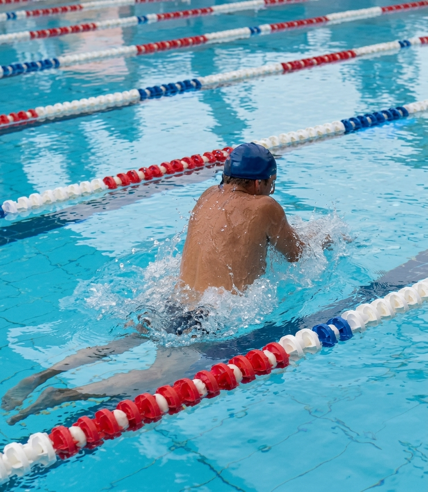

01
Stroke Mechanics
Analysis of body position, stroke phases, timing, propulsion, recovery and coordination in all competitive strokes.
Technical development, training methodology and performance coaching — building swimmers from foundational aquatic skills to competitive and high-performance environments.

My swimming coaching approach combines technical understanding, movement quality, training planning and athlete development. Across international coaching environments, I have worked with swimmers at different stages, from learning and skill acquisition to competitive training and performance-focused preparation.
My background in Sport Science and experience across swimming and water polo allow me to connect aquatic technique with biomechanics, coordination, physical preparation and the practical demands of training.
Stroke Technique
Body position, propulsion, timing, coordination and efficient movement.
Training Methodology
Planning, progression, energy systems, target pace and training structure.
Athlete Development
Skill acquisition, individual needs, age-appropriate progress and performance.
Teaching & Learning
Clear progressions, feedback, observation and adapting activities.
Swimming performance develops through the interaction of efficient technique, physical preparation, consistency and intelligent training design.
Analysis of body position, stroke phases, timing, propulsion, recovery and coordination in all competitive strokes.
Drills, skill progressions, feedback and practical ways to connect technical work to full-stroke swimming.
Session design, training targets, pace control, aerobic and anaerobic development, threshold work and performance preparation.
Progressive development of coordination, efficiency, physical capacities, racing skills and individual performance goals.
Swimming coaching, teaching and programme experience across clubs, schools and aquatic settings.
Coaching and teaching swimming in school settings, including competitive programme work and swimming instruction for younger children and learners with additional support needs.
Club environment experience combining swimming coaching, athlete development and programme supervision.
Coaching and teaching experience in London aquatic environments, including club and pool-based programmes.
Competitive swimming coaching and physical preparation, informed by Sport Science education and practical coaching experience.
Articles exploring stroke mechanics, coordination and technical analysis. Read the original publications through the SwimSwam author archive.
Coordination and timing between arm action, kick and glide in breaststroke.
Original on SwimSwam ↗Developing butterfly movement through an understanding of body undulation and technique.
Original on SwimSwam ↗Technical analysis of the freestyle recovery and its movement relationship to the swimmer's body.
Original on SwimSwam ↗Swimming · Water Polo · Facility Management · Practical Experiences
A broader project connecting aquatic sports methodology, teaching, coaching, programme management and practical experience.
Explore ProjectsOpen to swimming coaching, athlete development, technical and programme leadership, teaching and international collaboration opportunities.
Contact Livio Cocozza